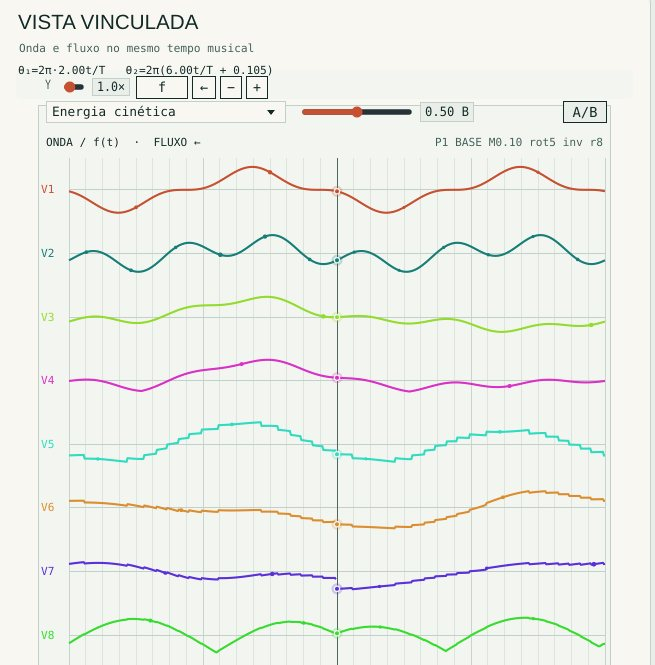
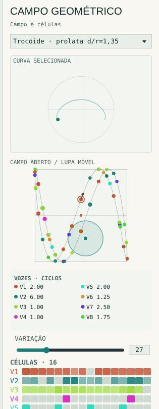
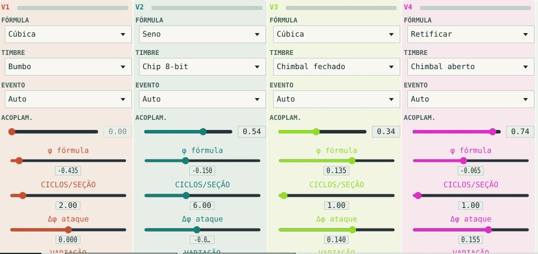
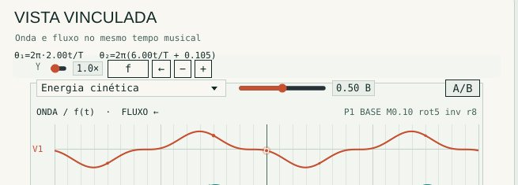

Cada dial representa uma fase θᵢ(t) = 2π nᵢ t/T + φᵢ. n indica quantas voltas cabem na seção T. A seção tem 16 tempos (quatro compassos em 4/4) e sua duração é T = 960/BPM segundos. Mudar BPM durante a reprodução aplica a nova duração no início da próxima seção. O ponto branco mostra o estado atual; os marcadores indicam ataques previstos. No Mixer, φ fórmula desloca a curva que calcula a intensidade de cada voz; os instantes dos ataques permanecem fixos.
No gráfico Estudo · ciclo compartilhado, arraste um trecho vazio do anel para adiantar ou atrasar o stem inteiro; os ataques mantêm suas distâncias. Arraste um ponto para mover só aquele ataque. Clique em um espaço vazio do anel para criar ataque; arraste o ponto com Shift e mova-o para dentro/fora para ajustar a força; botão direito ou duplo clique no ponto remove o ataque. Alt+clique no anel desativa a célula do stem.

2. Regras de evento
Centro dispara nas passagens θ = 0 ou π. Extremos dispara nas inversões θ = π/2 ou 3π/2. A regra altera os instantes de ataque sem mudar a oscilação desenhada.
3. Superfície e geometria
O plano combina x = sin θ₁ e y = sin θ₂. Campo livre mantém todos os ataques, mas uma Lupa móvel pesa a intensidade conforme a distância. Quatro ilhas pulsam e derivam em fases próprias com influência suave da vizinha; conectores transitórios incluem o corredor entre ilhas próximas no campo de ataques; duas microlinhas derivam e respiram de modo assimétrico. Cada ataque é recalculado no campo vigente e pode soar ou virar pausa. São agentes composicionais determinísticos, não uma simulação celular. O percurso XY anima a relação entre vozes. Fonte geométrica faz y(t) conduzir a V1; curvas Fourier só afetam o som quando escolhidas como essa fonte. Compasso, polígonos, espiral, Lissajous, curvas rolantes, cicloide, catenária e bilhar oferecem percursos. Área e perímetro são medidas informativas; o bilhar é operador de eventos, não reverberação de sala.

4. Espaço acústico
A geometria de uma sala altera caminhos e tempos das reflexões. O bilhar ideal acompanha um raio: v′=v−2(v·n)n; percurso dividido pela velocidade do som aproxima o atraso e a energia pode ser reduzida em cada parede. Isso descreve melhor altas frequências quando o comprimento de onda é pequeno diante da sala. Em baixas frequências, as ondas interferem e formam modos próprios; uma resposta de sala precisa incluir modos ou uma resposta ao impulso. O bilhar atual é só um operador composicional de eventos, não reverberação acústica. Ainda não há efeito de sala no áudio.
5. Som e modelo
A lei I oferece oito funções: constante, projeção y, produto xy, diferença x²−y², Gauss no centro, bandas cosseno, energia potencial U e energia cinética K. Para U e K, x e y são deslocamentos normalizados de dois osciladores de mesma massa, com frequências proporcionais aos ciclos por seção: U=(n₁²x²+n₂²y²)/(n₁²+n₂²), K=1−U. É um modelo idealizado, não uma medição de energia acústica. O parâmetro λ mistura a função escolhida com intensidade uniforme. No Mixer, Cauda encurta o amortecimento e Fundamental reduz o primeiro modo nos timbres harmônicos.
Em MIDI de bateria, V1–V8 são papéis internos, não números de pista: V1 bumbo (GM 35–36); V2 caixa, aro e variações (37–40); V3 chimbal fechado/pedal (42/44); V4 chimbal aberto (46); V5 tons (41, 43, 45, 47, 48, 50); V6 pratos (49, 51–53, 55, 57, 59); V7 tambores de mão (60–66); V8 acessórios e outras notas. No corpus GMD com mapa TD-11, 22/26 são chimbais e 58 é aro de tom. A seed escolhe uma família sonora sem trocar o mapa das vozes; a máscara começa em Campo livre. Para estudar um beat, importe-o, faça solo de cada stem no Mixer e identifique pulso, guia e resposta antes de comparar timbres. O rótulo do arquivo é metadado, não prova de autenticidade estilística.

6. Zoom do gráfico
Cada voz aparece em sua própria faixa. O botão com seta alterna o fluxo das ondas para a esquerda, para a direita ou a linha temporal fixa. Em fluxo, o tempo tocado fica no centro e as curvas passam por ele. Use + e − ou a roda do mouse para ampliar até uma janela de um segundo. Arrastar um trecho ampliado volta à linha fixa e permite percorrer a seção. O movimento desta vista não altera o som. No Mixer, Movimento V2 desloca a fase da segunda voz por compasso e muda seus ataques.

7. Cenas e versões
Guardar cria uma versão na sessão. Exportar cena grava um .batruc.txt; Abrir cena restaura esse arquivo e acrescenta a versão ao histórico. REC escolhe o destino e grava o master estéreo em PCM 24-bit. O botão fica vermelho e mostra STOP com o tempo decorrido; o limite padrão é 5 min, ajustável entre 1 e 15 min pela caixa ao lado. STOP fecha WAV e TXT em segundo plano. A conclusão normal aparece no status sem janela modal; falhas de escrita são avisadas. Se você pausar o transporte, esse intervalo será gravado como silêncio; a forma gerada não inclui passagens inteiras silenciosas. Arquivos existentes não são substituídos. O histórico mantém até 16 versões nesta sessão.
8. Ritmos possíveis
Com n posições e dois estados por posição — pausa ou ataque — existem 2ⁿ padrões. Escolha n para ver cada subdivisão e percorra os padrões pelo número ou pelas células. Em n=4 há 16 possibilidades; n=12 tem 4.096. Compasso 4/4 usa 16 semicolcheias e sorteia uma entre 65.536 combinações. O explorador e a prévia sonora não alteram a composição. O desafio Praticar oculta um padrão para você ouvir e reconstruir. O botão Percurso propõe cinco desafios: 4, 6, 8, 12 e 16 posições; ouça cada padrão, reconstrua-o e avance após acertar. Sequências didáticas com ritmos e contextos musicais ainda serão desenvolvidas.
Trilha de escuta: importe um MIDI com origem, compasso e BPM identificados; ouça por stem e procure marcação, guia e resposta; mude uma camada e compare. Os rótulos brasileiros do GMD descrevem performances de bateria, não definem tradições. No Maracatu Nação, compare fontes contextualizadas e não trate um baque como universal.
Uma batida dividida em tercina tem n=3 e 2³=8 padrões. Em um compasso 3/4 com tercinas em cada tempo, n=9 e 2⁹=512. A regra continua 2ⁿ; muda o total de posições consideradas.
A opção de compasso percorre 4/4 em 16 semicolcheias ou 3/4 com tercinas, em 9 posições ao longo de três tempos. No seletor, n posições por batida continuam sendo uma batida; no compasso ternário, 3 posições por batida se repetem por três tempos.
9. Baixo e Mixer
A linha seeded do baixo parte dos ataques das vozes e da seed da composição. O campo hexadecimal e Novo baixo definem uma seed própria: ela muda o contorno de alturas e as escolhas de frase sem alterar o MIDI de origem. O nível 0 mantém as âncoras; níveis 1–3 acrescentam contratempos em subdivisões livres quando há ataques próximos como estímulo. O Mixer tem uma faixa BAIXO própria: Ativar liga a voz, o slider ajusta o nível, M silencia, S isola e Pan distribui o sinal no estéreo. Os mesmos controles aparecem na página Baixo. Editar o piano roll substitui a linha calculada; Novo baixo retorna à geração.